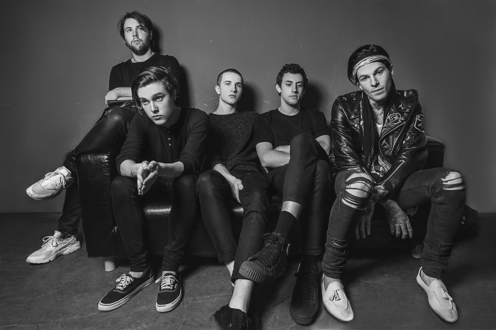
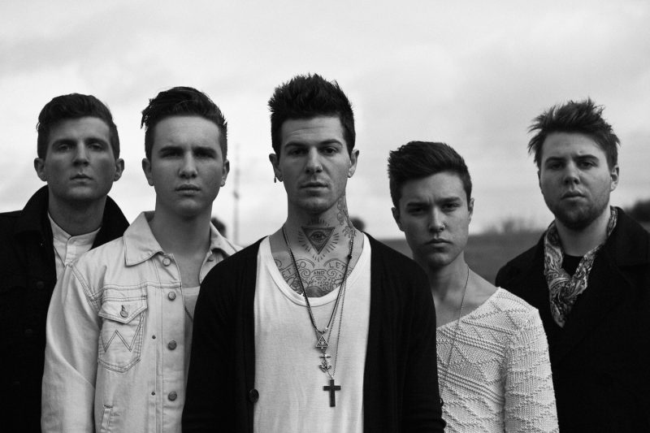

galeria



The Neighbourhood (abreviado como THE NBHD) es una banda de música alternativa rock estadounidense creada en agosto de 2011. El grupo está formado por el vocalista Jesse Rutherford, los guitarristas Jeremy Freedman, Zach Abels y el bajista Mikey Margott. La banda publicó su primer álbum de estudio el 23 de abril de 2013 a través de Columbia Records. El 16 de enero de 2014 la banda anunció a través de sus redes sociales que el baterista Bryan Sammis abandonaba el grupo por problemas con el vocalista Jesse Rutherford, y que continuaría su carrera musical en solitario. En noviembre de 2014 lanzaron los álbumes Thank you, I Love You, The Love Collection, Wiped Out! y Hard EP, que destacan por sus portadas en blanco y negro. En 2018, lanzaron su primer álbum con una portada en color, el cual cuenta con un sonido mucho más electrónico que sus predecesores y con el que obtuvieron más reconocimiento. Su álbum más reciente es Chip Chrome & The Mono-Tones. Desde 2022 la banda está inactiva de forma indefinida, debido a decisión propia del grupo tras más de una década activos.